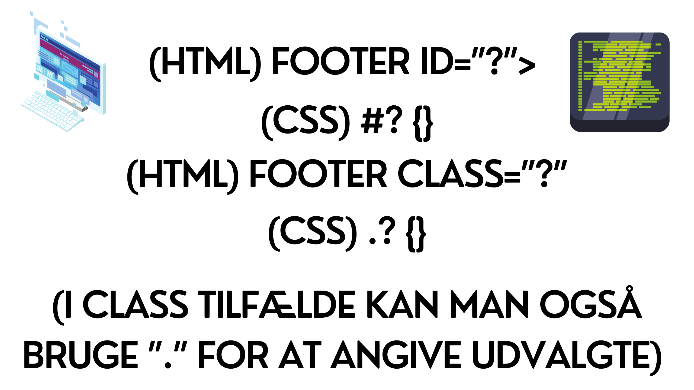

Introduktion til HTML & CSS
HTML er et kodesprog, som har mange formål. 1. Semester på Dania, har vi brugt HTML og CSS til at udvikle hjemmesider og brugt kodningen i praksis, medfulgt af bl.a. fremlæggelser, afleveringer m.m.
Når man arbejder med hjemmesider, er det normal kodeskik, at gå ud fra mobile first, så man dermed sørger for et stabilt design, når man går videre i processen til tablet og derefter desktop version. Derfor bruger man bl.a. wireframing til at skabe et overblik.
Semantiske Tags og Selectors
Semantiske tags, er det der fortæller noget om indholdet. Semantiske tags, kan anvendes af både mennesker og maskiner. Det sørger også for, at søgemaskinerne giver bedre resultater (altså SEO). Nogle eksempler på semantiske tags kunne bl.a. være: aside> footer> nav> section> og header>. Hvert tag yder noget forskelliget og har deres egen funktion . footer> er bl.a. der hvor det mest relevante information, ligger fast i bunden af en hjemmeside.
Nogle eksempler på tags i brug kunne være:
.gif)
En selector er den funktion, der vælger noget bestemt. Det vil sige hvilket element der arbejdes med.
For at angive hvad vi arbejder med, vil vi bruge ”. / #” i vores stylesheet/CSS, alt efter om det er Class, eller id. Bruger vi id, vil vi bruge ”#” og omvendt for class "." for at angive hvad vi arbejder med i vores stylesheet/CSS.
Eksempler kunne være:
CSS eller Cascading Style Sheet, er kodningen der angiver designet på den repræsenterede hjemmeside der kodes på. Altså det beskriver dens udseende eller styling. Et stylesheet, er også en samling af regler, som bestemmer hvordan noget skal se ud. Et @media(queries) er en regel i CSS. Styles, angives som rules som kan navngives og refereres i HTML.
Eksempler på forskellige styles i css:
- Farver (RGB, HEX-kode eller HSL) //
- Fonts(-family), Serif, Sans Serif, Italic etc. // Width, height
- Layout former
- Media Queries en del af, at lave responsivt design, hvilket også kan kaldes et breakpoint. Et breakpoint, er den bredde hvor en regel overtager fra en anden. Hvor responsive websider, typisk har mindst to og gerne flere breakpoints